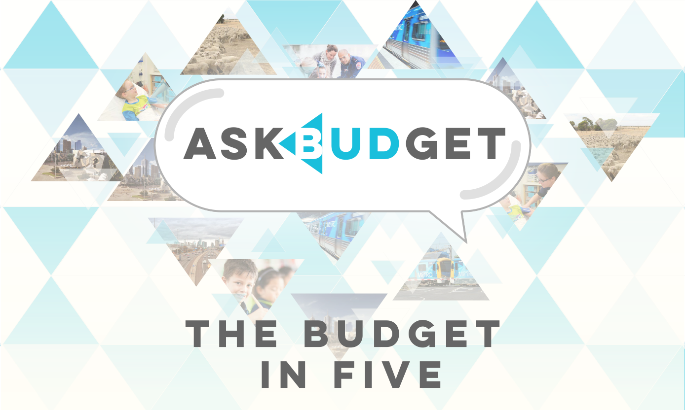

Project/Team Name: AskBudget
Project Description Data Story
This is a short description that describes how data has been reused and what your project is about.
Team Members
- Alex Cheong
- Ben Diep
- Damon Toumbourou
- Lex Toumbourou
- Lucy Wood
- Sumyatnoe Pwint
Data Sets Used:
2015-16 State Budget Papers